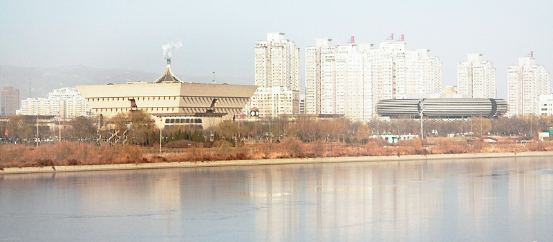

忽冷忽热，困，又睡不着。反正明天还有一天就开始放假了，起来补一篇太原的游记。 大学时最好的朋友是太原附近榆次人，所以在大学时期已经来过一次。印象中的太原脏脏的，空气里飘着煤灰。
这次去太原停留得稍微多些，仍然无意于去那些名胜古迹，只是在城里随便逛逛。汾河岸边看太原，还是挺有都市的感觉。到的时候是周一，传统的博物馆休息日，太原博物馆关着门，只好去不远处的煤炭博物馆溜达一下。进门的时候，博物馆的灯都是关着的，工作人员懒洋洋的开灯迎接我们这仅有的两名游客，还有位讲解员有点不耐烦的陪同着，我们也只好装作感兴趣的听她一路讲解。
直到看到＂煤变油＂这个词，我才突然意识到自己原来跟煤炭这行还曾经有点关系。当年在ABB的时候，我记得有个项目就是煤变油。于是脑海里立刻浮现若干石化行业英文术语，让人犯困的技术交流会，难缠的中石化客户，还有那些个老同事：表面正经实际坏坏的Steven，有好多内幕消息的Rita，是男人都羡慕的潇洒老Tom，每次来中国都会吃坏肚子的Brian…所有这些人都好多年没联络了，然后就这么突然的想起。 有些人有些事，你以为淡忘了，其实一直都在那儿，总有一天会因为一些完全想不到的原因而再次浮现。比如，煤炭，貌似不是个可以文艺起来的介质。